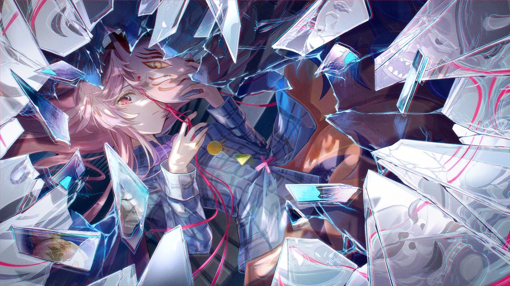

配置后群里发的链接会自动收藏进腾讯文档 / 表格（能识别表格表头按列写入）。 凭证去 docs.qq.com/open 首页「开发者信息」复制。不填也完全不影响其他功能。
机器人能结合群聊话题即兴画表情包，也可以 @它说「画一张X」点名作画—— 自画像卖萌是画它自己，小鸟风景就画内容。生图接口和对话模型是两套，填好下面即可。 不填或保持关闭，都不影响其他功能。
别关这个窗口，第一次跑可能要几分钟
（暂无日志。点「保存并启动」之后，机器人核心和 NapCat 的输出会实时出现在这里。）